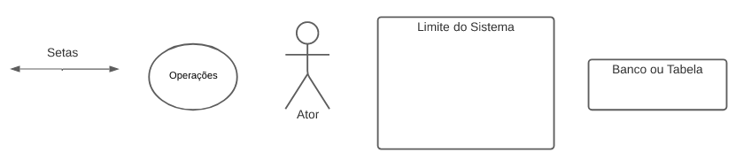

Aplicativos avaliados
1. Introdução
Na primeira etapa do projeto de entregas individuais, cada estudante selecionou um aplicativo para a elaboração de um rich picture. Esta página tem como objetivo apresentar os apps avaliados por cada membro do grupo e seus respectivos rich pictures.
2. Rich picture dos apps avaliados
| Nome do integrante | Nome do app |
|---|---|
| Artur Vinicius | MedSUS |
| Davi Lima | E-titulo |
| Delziron Braz | Hemovida |
| Marcos Vinícius | Pelando |
| Pablo Christiano | CNH Digital |
| Rodolfo Cabral | Meu imposto de renda |
2.1 Rich picture Artur Vinicius

Figura 1: Richpicture do integrante Artur Vinicius
Fonte: Autoria Própia
2.2 Rich picture Davi Lima

Figura 2: Richpicture do integrante Davi Lima
Fonte: Autoria Própia
2.3 Rich picture Delziron Braz

Figura 3: Richpicture do integrante Delziron Braz
Fonte: Autoria Própia

Figura 1: Richpicture do integrante Delziron Braz
Fonte: Autoria Própia
2.4 Rich picture Marcos Vinícius

Figura 4: Richpicture do integrante Marcos Vinícius
Fonte: Autoria Própia
2.5 Rich picture Pablo Christiano

Figura 5: Richpicture do integrante Pablo Christiano
Fonte: Autoria Própia
2.6 Rich picture Rodolfo Cabral

Figura 6: Richpicture do integrante Rodolfo Cabral
Fonte: Autoria Própia
3. Escolha do app
Após a realização de cada rich picture individual, o time se reuniu para discurtir o app que seria escolhido para o projeto. Após a reunião do dia 16/11/2022, diante dos parametros de familiaridade com as funcionalidade por parte da equipe, facilidade para encontrar o publico alvo e ser um aplicativo governamental. O time decidiu optar por não seguir com nenhuma dos apps que foram realizados os rich pictures anteriores e assim escolher o app Moodle para ser desenvolvido ao longo do projeto.
4. Referências
[1] "Introducing Rich Pictures - Picture Drawing Guidelines" - Software Development Project
[2] MONK, Andrew; HOWARD, Steve. "The Rich Picture: A Tool for Reasoning About Work Context". 1998
[3] Apresentação da aula de requisitos- Pré-rastreabilidade -Rich Picture Aula 04
5. Versionamento
| Versão | Data da realização | Data prevista revisão | Descrição | Autor | Revisor |
|---|---|---|---|---|---|
| 1.0 | 20/11/2022 | 21/11/2022 | Criação da página apps avaliados | Davi Lima | Pablo Christiano |
| 1.1 | 21/11/2022 | 21/11/2022 | Adição dos Rich Pictures, escolha do app, referencias | Davi Lima | Pablo Christiano |
| 1.2 | 27/11/2022 | 27/11/2022 | Correções pós feedback do professor | Davi Lima | Pablo Christiano |